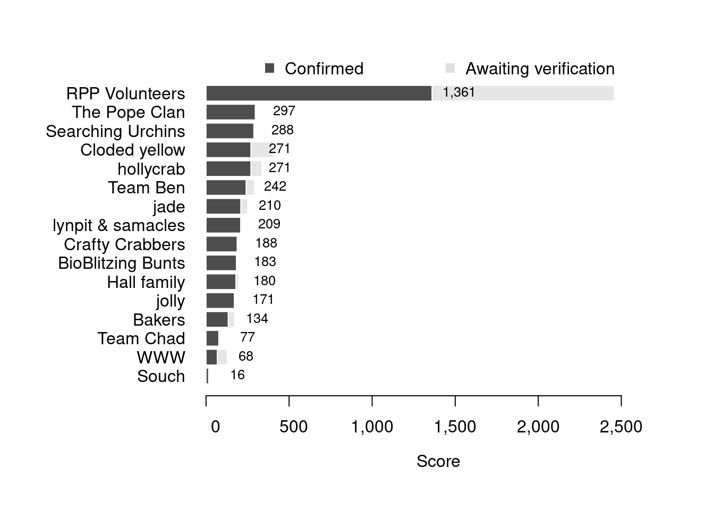

Content
You can view all the wildlife recorded at this event on iNaturalist.


| Records | 581 |
| Species | 203 |
| Verified species | 155 |
| Observers | 34 |
| Potential score | 3,526 |
| Confirmed score | 2,100 |
| Top verified species | Chauvetia brunnea |
| Top species rarity score | 200 |
| Registered participants | 44 |
| Children attending | 16 |
Congratulations to RPP Volunteers for taking the gold medal in this BioBlitz Battle! And well done to everyone for a great game and some fantastic wildlife finds.
| Team | Records | Potential Score | Confirmed Score |
|---|---|---|---|
| RPP Volunteers | 193 | 2458 | 1361 |
| The Pope Clan | 64 | 305 | 297 |
| Searching Urchins | 44 | 293 | 288 |
| Cloded yellow | 40 | 405 | 271 |
| hollycrab | 45 | 336 | 271 |
| Team Ben | 34 | 293 | 242 |
| jade | 15 | 251 | 210 |
| lynpit & samacles | 19 | 209 | 209 |
| Crafty Crabbers | 14 | 194 | 188 |
| BioBlitzing Bunts | 21 | 183 | 183 |
| Hall family | 16 | 197 | 180 |
| jolly | 25 | 165 | 171 |
| Bakers | 20 | 173 | 134 |
| Team Chad | 12 | 77 | 77 |
| WWW | 13 | 128 | 68 |
| Souch | 2 | 16 | 16 |

| Participant | Records | Potential Score | Confirmed Score |
|---|---|---|---|
| vickybarlow | 12 | 603 | 403 |
| Alexander Lydon | 58 | 822 | 316 |
| clairepayne | 44 | 293 | 288 |
| emonaghan | 33 | 314 | 285 |
| DorsetDowns | 40 | 405 | 271 |
| Holly McCain | 45 | 336 | 271 |
| jadeunderwater | 15 | 251 | 210 |
| popeyspots | 26 | 209 | 209 |
| Lynette Noyce | 19 | 209 | 209 |
| Ben Holt | 23 | 210 | 196 |
| V. Baulch | 14 | 194 | 188 |
| Julie Bunt | 21 | 183 | 183 |
| ventonlace | 16 | 197 | 180 |
| Joseph Baxter | 25 | 165 | 171 |
| davidhisselhoff | 25 | 167 | 167 |
| Harita Ravuru | 13 | 178 | 161 |
| pegasus29 | 20 | 173 | 134 |
| Lisa Rusiecka | 27 | 332 | 124 |
| rachel_edworthy | 22 | 144 | 115 |
| alexandrafwright | 7 | 184 | 109 |
| gigitips | 11 | 95 | 95 |
| deviatorstress | 12 | 77 | 77 |
| penmeva | 13 | 128 | 68 |
| eva_hawkins | 9 | 73 | 64 |
| Laura Coles | 5 | 56 | 56 |
| Lou Tee | 11 | 98 | 53 |
| Zak Russell | 4 | 54 | 36 |
| Andy Souch | 2 | 16 | 16 |
| popeinthewoods | 1 | 13 | 13 |
| nickpope29 | 1 | 8 | 8 |
| christophepatterson | 1 | 7 | 7 |
| Esme Southern | 2 | 48 | 0 |
A total of 5 species have a verified rarity score of 39 or higher.


Community verified records only
Click any image to view the taxon on iNaturalist.
| Name | Rarity Score | |
|---|---|---|

|
Least Whelk - Chauvetia brunnea | 200 |

|
Truncospora atlantica | 81 |

|
Pom-pom weed - Caulacanthus okamurae | 46 |

|
Wart Barnacle - Verruca stroemia | 42 |

|
Gaudy Babakina - Babakina anadoni | 39 |

|
Horned Isopod - Dynamene bidentata | 38 |

|
Single Horn Bryozoan - Schizoporella unicornis | 34 |

|
Cladophora rupestris | 33 |

|
White Tortoiseshell Limpet - Tectura virginea | 32 |

|
Blistered Brook Weed - Rivularia bullata | 31 |

|
Black-footed Limpet - Patella depressa | 29 |

|
Wrinkled Sea Mats - Didemnum | 28 |

|
Littorina fabalis | 28 |

|
small cushion star - Asterina phylactica | 27 |

|
Harmothoe impar - Harmothoe | 24 |

|
Saint Piran’s Hermit Crab - Clibanarius erythropus | 22 |

|
Rainbow Wrack - Ericaria selaginoides | 22 |

|
Baltic Isopod - Idotea balthica | 21 |

|
Red Ripple Bryozoan - Watersipora subatra | 20 |

|
Risso’s Crab - Xantho pilipes | 19 |

|
Black Squat Lobster - Galathea squamifera | 18 |

|
false Irish moss - Mastocarpus stellatus | 18 |

|
Perforated Barnacle - Perforatus perforatus | 18 |

|
Montagu’s Blenny - Coryphoblennius galerita | 17 |

|
Geotrupini | 17 |

|
Daisy Anemone - Cereus pedunculatus | 16 |

|
Hairy Sea-mat - Electra pilosa | 16 |

|
Emerald green paddle worm - Eulalia clavigera | 16 |

|
encrusting coralline algae - Lithophyllum | 16 |

|
Rough Periwinkle - Littorina saxatilis | 16 |

|
Wrack Siphon Weed - Vertebrata lanosa | 16 |

|
Montagu’s Stellate Barnacle - Chthamalus montagui | 15 |

|
Ragworms and Allies - Nereididae | 15 |

|
European Sting Winkle - Ocenebra erinaceus | 15 |

|
Beaked Barnacle - Austrominius modestus | 14 |

|
Pod Razor - Ensis siliqua | 14 |

|
orange pore fungus - Favolaschia claudopus | 14 |

|
Meshweavers and Allies - Marronoid | 14 |

|
Dulse - Palmaria palmata | 14 |

|
Great Scallop - Pecten maximus | 14 |

|
Honeycomb Worm - Sabellaria alveolata | 14 |

|
Gem Anemone - Bunodactis verrucosa | 13 |

|
Worm Pipefish - Nerophis lumbriciformis | 13 |

|
Blue-rayed Limpet - Patella pellucida | 13 |

|
Green Sea Urchin - Psammechinus miliaris | 13 |

|
Longspined Bullhead - Taurulus bubalis | 13 |

|
Netted Dogwhelk - Tritia reticulata | 13 |

|
Star Tunicate - Botryllus schlosseri | 12 |

|
European Painted Top Shell - Calliostoma zizyphinum | 12 |

|
crumb-of-bread sponge - Hymeniacidon perlevis | 12 |

|
Oarweed - Laminaria digitata | 12 |

|
Christmas Tree Worms - Spirobranchus | 12 |

|
Thongweed - Himanthalia elongata | 11 |

|
Pacific Oyster - Magallana gigas | 11 |

|
Common Brittle Star - Ophiothrix fragilis | 11 |

|
Rockpool Prawn - Palaemon elegans | 11 |

|
Strawberry Anemone - Actinia fragacea | 10 |

|
Irish Moss - Chondrus crispus | 10 |

|
Foxglove Tribe - Digitalideae | 10 |

|
Grey Mail-shell - Lepidochitona cinerea | 10 |

|
Spiny Spider Crab - Maja brachydactyla | 10 |

|
Lined Top Shell - Phorcus lineatus | 10 |

|
Violet Bramble Rust - Phragmidium violaceum | 10 |

|
Hairy Porcelain Crab - Porcellana platycheles | 10 |

|
Japanese Wireweed - Sargassum muticum | 10 |

|
European Common Cuttlefish - Sepia officinalis | 10 |

|
Fox-tail Feather-moss - Thamnobryum alopecurum | 10 |

|
Broadleaf Sea Lettuce - Ulva lactuca | 10 |

|
Cushion Star - Asterina gibbosa | 9 |

|
Common Coralline - Corallina officinalis | 9 |

|
Blue Mussel - Mytilus edulis | 9 |

|
Velvet Swimming Crab - Necora puber | 9 |

|
Common Hermit Crab - Pagurus bernhardus | 9 |

|
elmleaf blackberry - Rubus ulmifolius | 9 |

|
Purple Topshell - Steromphala umbilicalis | 9 |

|
Rusty Dot Pearl - Udea ferrugalis | 9 |

|
Gutweed - Ulva intestinalis | 9 |

|
Montagu’s Crab - Xantho hydrophilus | 9 |

|
Atlantic Beadlet Anemone - Actinia equina | 8 |

|
Common Grass-veneer - Agriphila tristella | 8 |

|
snakelocks anemone - Anemonia viridis | 8 |

|
Knotted Wrack - Ascophyllum nodosum | 8 |

|
sea beet - Beta vulgaris maritima | 8 |

|
Light Emerald - Campaea margaritaria | 8 |

|
Edible Crab - Cancer pagurus | 8 |

|
Old man’s beard - Clematis vitalba | 8 |

|
rock samphire - Crithmum maritimum | 8 |

|
Ivy-leaved cyclamen - Cyclamen hederifolium | 8 |

|
Jelly Spot Fungus - Dacrymyces stillatus | 8 |

|
Black Bryony - Dioscorea communis | 8 |

|
Dusky Thorn - Ennomos fuscantaria | 8 |

|
Saw Wrack - Fucus serratus | 8 |

|
bladder wrack - Fucus vesiculosus | 8 |

|
Grey Seal - Halichoerus grypus | 8 |

|
Tutsan - Hypericum androsaemum | 8 |

|
Himalayan honeysuckle - Leycesteria formosa | 8 |

|
Shanny - Lipophrys pholis | 8 |

|
Common Periwinkle - Littorina littorea | 8 |

|
Crystal Brain Fungus - Myxarium nucleatum | 8 |

|
Atlantic Dogwhelk - Nucella lapillus | 8 |

|
Common European Limpet - Patella vulgata | 8 |

|
Winter Heliotrope - Petasites pyrenaicus | 8 |

|
soft shield fern - Polystichum setiferum | 8 |

|
Turkey Oak - Quercus cerris | 8 |

|
sessile oak - Quercus petraea | 8 |

|
deer fern - Struthiopteris spicant | 8 |

|
Wood Sage - Teucrium scorodonia | 8 |

|
Wall Pennywort - Umbilicus rupestris | 8 |

|
sycamore maple - Acer pseudoplatanus | 7 |

|
common yarrow - Achillea millefolium | 7 |

|
horse-chestnut - Aesculus hippocastanum | 7 |

|
Cross Orbweaver - Araneus diadematus | 7 |

|
Hart’s-tongue fern - Asplenium scolopendrium | 7 |

|
Brachyceran Flies - Brachycera | 7 |

|
Butterfly bush - Buddleja davidii | 7 |

|
European Green Crab - Carcinus maenas | 7 |

|
Brown-lipped Snail - Cepaea nemoralis | 7 |

|
enchanter’s-nightshade - Circaea lutetiana | 7 |

|
creeping thistle - Cirsium arvense | 7 |

|
Garden Snail - Cornu aspersum | 7 |

|
Hazel - Corylus avellana | 7 |

|
common hawthorn - Crataegus monogyna | 7 |

|
Ivy-leaved toadflax - Cymbalaria muralis | 7 |

|
King Alfred’s Cakes - Daldinia concentrica | 7 |

|
wild carrot - Daucus carota | 7 |

|
European beech - Fagus sylvatica | 7 |

|
European ash - Fraxinus excelsior | 7 |

|
Herb Robert - Geranium robertianum | 7 |

|
Wood Avens - Geum urbanum | 7 |

|
ground-ivy - Glechoma hederacea | 7 |

|
common ivy - Hedera helix | 7 |

|
hogweed - Heracleum sphondylium | 7 |

|
European holly - Ilex aquifolium | 7 |

|
ragwort - Jacobaea vulgaris | 7 |

|
Variegated Yellow Archangel - Lamium galeobdolon argentatum | 7 |

|
European Herring Gull - Larus argentatus | 7 |

|
Common Honeysuckle - Lonicera periclymenum | 7 |

|
scarlet pimpernel - Lysimachia arvensis | 7 |

|
Brimstone Moth - Opisthograptis luteolata | 7 |

|
Eurasian Magpie - Pica pica | 7 |

|
ribwort plantain - Plantago lanceolata | 7 |

|
greater plantain - Plantago major | 7 |

|
Creeping cinquefoil - Potentilla reptans | 7 |

|
Primrose - Primula vulgaris | 7 |

|
Blackthorn - Prunus spinosa | 7 |

|
common bracken - Pteridium aquilinum | 7 |

|
English oak - Quercus robur | 7 |

|
Dog-rose - Rosa canina | 7 |

|
Common Sorrel - Rumex acetosa | 7 |

|
red campion - Silene dioica | 7 |

|
Alexanders - Smyrnium | 7 |

|
Smooth Sow-thistle - Sonchus oleraceus | 7 |

|
white clover - Trifolium repens | 7 |

|
great stinging nettle - Urtica dioica | 7 |

|
bedstraws - Galium | 3 |